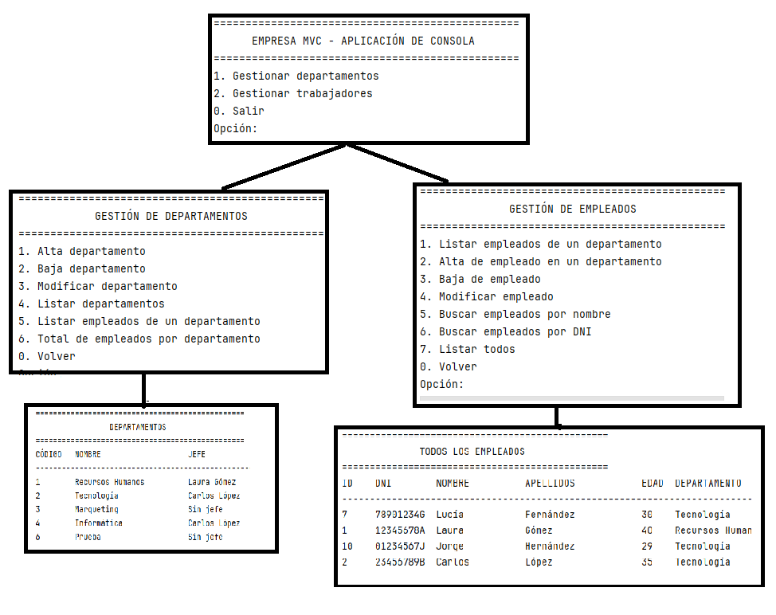
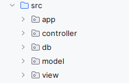
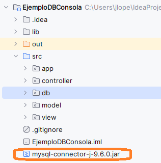
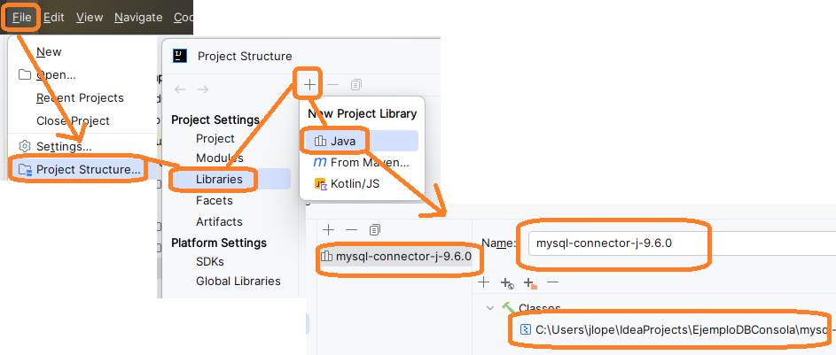
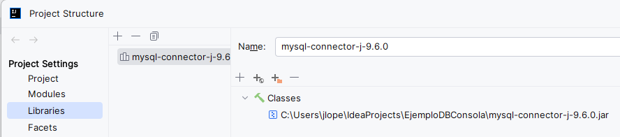
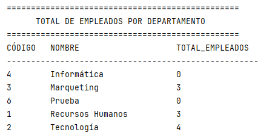
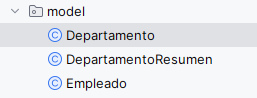
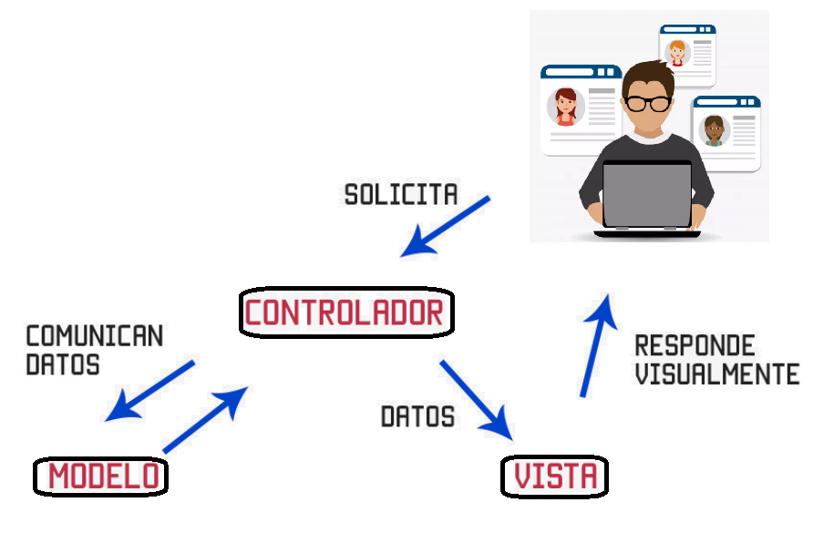

🧭 Estructura de un proyecto 2 con JDBC¶
Introducción¶
Vamos a ver un segundo ejemplo con un mantenimiento más complejo en el que tenemos dos tablas relacionada. El objetivo será crear el mantenimiento de la siguiente base de datos en MySql

Un trabajador pertenece a un departamento y un departamento tiene un Jefe. Permitiremos que un trabajador no tenga departamento y que un departamento no tenga jefe dejando que puedan ser nulos dichos campos de ambas tablas.
La relación entre ambas tablas es:
- Un departamento tiene muchos empleados.
- Un empleado pertenece a un departamento.
- Un departamento puede tener un jefe, que también es un empleado.
Nota
En muchas ocasiones, para evitar trabajar con nulos, se decide crear una tupla general que represente la no pertenencia. Por ejemplo: Se crea la tupla en Departamento “Sin departamento”, y en trabajadores una persona llamada: “Sin Jefe”
La aplicación permitirá acceder al mantenimiento de Empleados y Departamentos permitiendo filtrar la información para facilitar al usuario encontrar los datos que necesite y mostrará listados importantes sobre los datos.
Resultado final¶
Tenemos el código final en el repositorio
La aplicación tiene dos mantenimientos principales que son los departamentos y los trabajadores. Para ello, la aplicación comienza en un menú principal que nos permita acceder a dichos mantenimientos.

Objetivos de la aplicación¶
Los objetivos principales del proyecto son:
- Aplicar el patrón MVC en una aplicación de consola.
- Conectar Java con una base de datos relacional mediante JDBC.
- Gestionar departamentos y empleados con operaciones CRUD.
- Implementar consultas y listados útiles para el usuario.
- Organizar el código de forma modular y mantenible.
Requisitos funcionales¶
La aplicación debe permitir:
- Dar de alta departamentos.
- Dar de baja departamentos.
- Modificar departamentos.
- Cambiar el jefe de un departamento.
- Dar de alta empleados.
- Dar de baja empleados.
- Modificar empleados.
- Listar todos los departamentos.
- Listar los empleados de un departamento.
- Mostrar el total de empleados por departamento.
- Buscar empleados por nombre.
- Buscar empleados por DNI.
- Listar todos los empleados ordenados alfabéticamente.
- Listar todos los empleados ordenados por edad. Cada uno de los menús nos permiten realizar el CRUD de cada tabla. Tenemos la posibilidad de ver listados interesantes de Departamentos y de Trabajadores.
Tecnologías utilizadas¶
Para desarrollar la aplicación se han utilizado las siguientes tecnologías:
- Java
- IntelliJ IDEA
- JDBC
- MySQL o MariaDB
- Markdown para la documentación
Estructura del proyecto¶
El proyecto se organiza en varios paquetes siguiendo el patrón MVC:
app: contiene la clase principalMain.model: contiene las clases de dominio comoDepartamentoyEmpleado.model: contiene clases auxiliares comoDepartamentoResumen.db: contiene la conexión y los DAO.view: contiene las clases encargadas de mostrar menús y listados en consola.controller: contiene la lógica que coordina la vista con el acceso a datos.

src
├── app
│ └── Main.java
├── controller
│ ├── AppController.java
│ ├── DepartamentoController.java
│ └── EmpleadoController.java
├── db
│ ├── DBConnection.java
│ ├── DepartamentoDAO.java
│ └── EmpleadoDAO.java
├── model
│ ├── Departamento.java
│ ├── Empleado.java
│ └── DepartamentoResumen.java
│
└── view
├── Consola.java
├── DepartamentoView.java
└── EmpleadoView.java
Agregar jdbc de MySql al proyecto¶
Es necesario agregarlo el jdbc de MySql/MariaDB. Podemos hacerlo con: - Maven(no me a funcionado con esta versión de IntelliJ). - Directamente. Vamos a usar la segunda opción.
Descargamos el fichero de
descarga directa mysql-connector-j-9.6.0.zip
Lo descomprimimos y vamos a agregar el fichero mysql-connector-j-9.6.0.jar al proyecto.
Copiar el fichero al proyecto:

Agregamos la librería para su uso(buscar el fichero en la ruta del proyecto):


Patrón MVC aplicado al proyecto¶
El patrón MVC divide la aplicación en tres partes:
-
Modelo Incluye las clases
Departamento,Empleado,DepartamentoResumeny los DAO.
Su función es representar los datos y acceder a la base de datos. -
Vista Incluye las clases
Consola,DepartamentoViewyEmpleadoView.
Se encarga de mostrar menús, mensajes y listados al usuario. -
Controlador Incluye
AppController,DepartamentoControlleryEmpleadoController.
Recibe las acciones del usuario, llama a los DAO y envía los resultados a la vista.
Implementación paso a paso¶
1-Base de datos en MariaDB/MySql¶
Es necesario crear la base de datos en el gestor seleccionado. Suponemos que está creada la base de datos y la llamamos empresaDB.
Para crear la base de datos, entrar en MySQL y crear la base de datos
CREATE DATABASE empresadb;
2-Crear la conexión a la base de datos¶
La clase DBConnection permite gestionar la conexión con la base de datos mediante JDBC. Implementa el patrón Singleton para evitar más de una instancia de la clase.
Esta clase centraliza: - la URL de conexión - el usuario y contraseña - la apertura de la conexión - el cierre de la conexión - la creación inicial de tablas y datos de ejemplo
3-Crear las clases del modelo¶
Las clases Departamento y Empleado representan las entidades principales del sistema. Estas clases permiten definir los objetos POJO que contienen la información extraída de la base de datos.
Por otro lado, vamos a mostrar un listado de departamentos con los totales de empleados, para ello hemos creado una clase DepartamentoResumen que permite definir los objetos POJO con dicha información extraída de la base de datos para mostrarla


Estas clases incluyen: - constantes para centralizar el formato para la impresión tabulada de listados - atributos privados - constructores - getters y setters - método toString(), que muestra la información tabulada
4-Implementar los DAO¶
El patrón DAO nos permite aislar el acceso a los datos de la aplicación, conviertiendo las tublas de la base de datos en objeto Java(POJO) y viceversa.
Se crearon dos clases DAO:
Estas clases encapsulan todas las operaciones de acceso a datos, como inserciones, borrados, modificaciones y consultas. Se implementan bajo el patrón Singleton para evitar más de una instancia.
Operaciones implementadas en DepartamentoDAO¶
Estas operaciones reciben/devuelve un objeto/lista_objetos de Departamentos
- crear departamento
- borrar departamento
- modificar departamento
- obtener departamento por código
- listar departamentos
- obtener total de empleados por departamento: Nos permite recuperar el total de empleados por departamento como una lista de objetos de tipo DepartamentoResumen
Por otro lado, disponemos de métodos de utilidad:
- resultSetToDepartamento: que nos permiten crear el objeto Departamento a partir de la posición actual del ResultSet
- updateJefeDepartamento: Para actualizar el jefe de un departamento
Operaciones implementadas en EmpleadoDAO¶
De forma muy parecida tenemos las operaciones CRUD de Empleado EmpleadoDAO.java - crear empleado - borrar empleado - modificar empleado - obtener empleado por id - listar empleados por departamento - buscar por nombre - buscar por dni - listar todos ordenados alfabéticamente - listar todos ordenados por edad
5- Crear las vistas de consola(view)¶
Para la interacción con el usuario, en el paquete view se crearon clases de vista para consola.
Estas vistas muestran: - menús - tablas con resultados - mensajes de confirmación y error - pausas para volver al menú tras mostrar un listado
Cada mantenimiento tiene su clase View y por otro lado tenemos la clase Consola que contiene utilidades(leer número, borrar pantalla, leer si/no...)
6 Crear los controladores¶
Los controladores gestionan el flujo de la aplicación y hacen de intermediario entre los datos y las acciones del usuario

Los controladores mantienen instancias de sus respectivos DAO y View para controlar la aplicación y tomarán las decisiones en función de la elección del menú de usuario.
- AppController controla el menú principal.
- DepartamentoController controla las acciones relacionadas con departamentos.
- EmpleadoController controla las acciones relacionadas con empleados.
Cada controlador recoge datos desde la vista, llama a los DAO y devuelve los resultados a la vista para su presentación.
7 Crear la clase Main¶
Finalmente se creó la clase Main, que actúa como punto de entrada de la aplicación.
- inicializa el controlador principal